クリスマスなんていらないよ！！！仏教徒の
三丁目です。
今結構飲んで出来上がってます♪今日は大阪でこの日記をつけてます。
タケユキの家も我が家に引けをとらずいいとこやね☆
今日は大阪を色々まわりました。
海遊館に八年ぶりに行き、その後地上６メートルバク宙をして。。。。
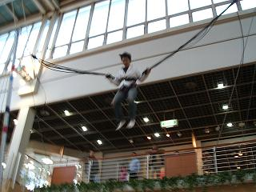
６メートルジャンプをする三丁目
僕は大阪で何をしてるのだろう(泣)
まぁ僕の周りでもいろいろな事が起こってます。
僕は愛媛に帰って年を迎えるのか、広島で迎えるのか。。。
あと人には簡単に語れないような悩みなども多々あり。
一ヶ月前の僕に比べると随分立ち直ったと思います。
このテンションで今年残り二週間ほど乗り切りたいと思います。
最後にこのページを見ている可能性が一番高い中三Kのお○○○！！
英語をやれ！英語を！
以上大阪からグダグダの現在リアルに彼女を探している
三丁目でした！！
**************************************************
ここから先は俺が書いてますよ、タケユキです。
前日泊まりに来てた
さんまと
朝７時に起床、
新幹線でやってくる
三丁目と
綾乃さんを迎えに新大阪駅へ。
９時に駅で無事再会、
三丁目がお土産にもみじ饅頭を持ってきてたのにはおどろいた。
というかお土産としてもみじ饅頭をもらうのが初めてな気がするんだけど。
あと一週間で冬休みとかいう中途半端な時期にやってくる二人に
多少あきれつつも
うのきとの合流場所、本町駅へ。
俺が集合場所に「もとまち」って言ってたから
なぜかうのきが「？？？」みたいになってた。
本町は本来っていうか本当は「ほんまち」って読むらしいね、
そういわれたらそんな気がするけどなんで俺は一年半以上も大阪住んでて
気付かなかった自分は大阪人としていかがなものか。
予定してた時間よりも１７分ほど遅れてうのき到着、
ちゃんと時間は守れよ、うのき。
本町でアレックス以外のメンバーは全員集合、
とりあえず海遊館へ向かう。
大阪港駅に着いて海遊館に向かっていたら
海遊館の近くに記念撮影用のセット（長椅子）がおいてあったから使ってみた。
ちなみにカメラマンは
綾乃さん。
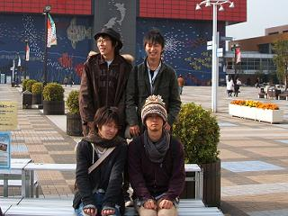
海遊館の中に入ってみるとそこはもう水の楽園。
水中トンネルの中を進んでいくとガラス張りの向こうには魚、魚、魚。
まるで海の中にいるみたい、そんな幻想を抱いて歩を進める隣にいるのは
さんまと
綾乃さん。
この二人も感動してたりするのかなぁと思っていたら、
二人の口から出てきた言葉は、
さんま「まあこの一面全てがCGだったりするんだけど」
綾乃さん「わぁ、おいしそう☆」
おい、お前ら水族館に求めているものが違うだろ。
水中トンネルを抜けて奥に進んでいくといろいろな生き物がいた。
デジカメを持ってきたから撮りまくろうと思っていたんだけど
水中の中を写真に収めるのは意外に難しい。
撮ってみてもぶれた写真ばっかり。
きれいに撮れたのはワニとかイグアナ、ペンギンとかの
地上にいる生き物ばかり。
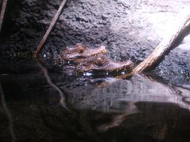
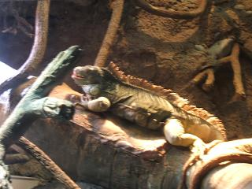
これじゃ水族館に行った写真として胸が張れそうにない。
それからも写真を撮りまくってみるも
なかなか合格な写真を撮るのは難しい。
やっと撮れたのが海遊館のマスコット的存在のジンベイザメ。
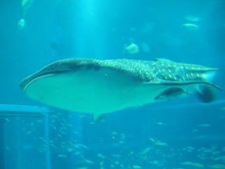
いやぁ、でかい。
人間一人くらい楽勝で飲み込めそう。
全長が２０メートルくらいの巨大なジンベイザメは
海遊館で一番大きな水槽に飼育されています。
その水槽にはジンベイザメの他にもマンタとかマグロ、
他にもいろいろな魚が泳いでた。
いろいろな魚がいるもんで
水槽の中を所狭しと泳ぎ回る魚もいれば
「もうだるいっすわ〜」みたいな感じでのんびり浮いてるだけの魚もいる。
中には壁にもたれて「こいつやる気あんのか？」ってくらい
気合の入ってなさそうな魚もいたんだけど、
１匹やばいのがいた。
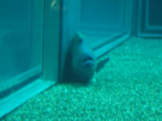
生きてるかーーーーっ？
この日一日かけていろんな魚を見てきたけど、
こいつはやばい。
やる気がどうとか以前に死にかけてる。
ってか初めてこいつを見つけた時は正直死んでると思った。
ガラスの近くにもたれてそうだったので
近くに行って見てみた。
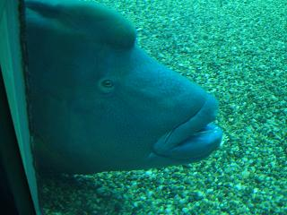
とりあえず生きてた、目だけ動いてた。
それにしてもこんな魚はありなんだろうか。
確かに魚にとっては、勝手に捕まえられて
狭い水槽の中に押し込められて理不尽な扱いを受けてるんだろうけど、
このすねようはひどい。
お客さんもお金払ってきてるんだから
多少はそれなりのパフォーマンスというか泳ぎは見せるべきですよね。
まぁ魚にお金は入らんのだろうけど。
海遊館を一通り回って次はなんばへ。
この時間になってもアレックスは現れず。
まさかあいつは来ないつもりじゃないだろうな。
電話してみたら「俺引越しだし」とか言ってたし。
引越しと俺らとどっちが大事か！？
電車を乗り継ぎなんばへ到着。
道頓堀で大阪名物の定番、かに道楽のかに、グリコ、食い倒れ人形を見る。
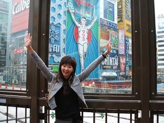
グリコの格好をする綾乃さん
写真じゃ分からんのだけど実は
綾乃さんはちゃんと
足までグリコの格好を真似てます。
写真に足がちゃんと写ってなかったことを理由に殴られた。
一通り見たのでお昼ご飯へ。
大阪らしくお好み焼きを食べる。
三丁目がここに来てまで広島風お好み焼きを食べそうにしてたので
そこは押しとどめて関西風お好み焼きを食べた。
お好み焼きの次はたこ焼きを食べようってことで
それからアメ村の三角公園へ。
歩いて三角公園へ行く途中トイレに行きたくなって
さんまと
うのきが
トイレへ、続いて
綾乃さんも。
俺と
三丁目はまあみんなで来るだろうと思って先に出発。
それから十分後、三角公園で
さんまと
うのきと合流。
あれ？綾乃さんは？
さんまと
うのきは綾乃さんが俺らと一緒にきてると思ってたしい。
綾乃さん行方不明。
まあケータイにかければ問題ないだろうと電話。
・・・・・・・・・・・・・・・、
・・ブルルルルルルルルルルルル、
・・ブルルルルルルルルルルルル、
なぜか俺のカバンから振動を感じる。
！！綾乃さんの
ケータイ俺が
持たされてた預かってたんだ。
綾乃さん行方不明。
二手に分かれて捜索すること１０数分、
トイレで別れた所の近くで余裕でウィンドウショッピングを
していた綾乃さんを発見、
おい、迷子になってんだぞ、もう少しビビれ。
知らない場所を歩くときはケータイは持ち歩いてください。
たこ焼きも食べ、それからボーリングをやり、
とりあえずやりたいことはひと段落できただろうと
帰路へつくことに。
帰り道の途中にきれいなイルミネーションがあるって言ったら
行きたいって言ったから淀屋橋から梅田まで歩いた。
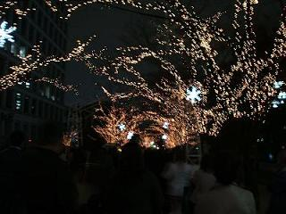
光のルネサンスっていうイルミネーションで２６日までやってるそうです。
夜はうちでテーブル囲んで鍋。
この時になってもアレックスは現れず。お前次は来いよ。
って言っても食材はほとんど肉と白菜。
他に卵があるくらいだったんだけど、
三丁目がある一言を言ったことで事件は始まった。
「卵って手のひらで握って持つとどんだけ力入れても割れんのだって」
卵は構造上面からの圧力には異常に強く、
人が握りつぶすことはできないらしい。
そんな話信じてなかった俺らは
正直割れるだろうと思いながらも試すことにした。
割れた時に飛び散ったら困るんで鍋の上でチャレンジしてみることに。
おそるおそる力を入れてみるも、卵は割れない。
少しずつ力を強めていっても全然割れそうな気配もない。
うのきがチャレンジしてみても、
それでも卵は割れません。
さんまがチャレンジしてみても、
それでも卵は割れません。
うんとこしょ、どっこいしょ、
それでも卵は割れないわけです。
ここまで割れないもんだとどうにかして割ってやろうと
思いっきり力を入れる、もう超本気で。
思いっきり入れたのね、力を。
そしたら自然と指先の方にも力が入って
指からの圧力で卵にヒビが入った。
さっきも書いたんだけど卵は面からの圧力には異常に強い。
つまり点からの圧力には非常に弱い。
卵にヒビが入ってしまっては
面の力に対する耐久力はもうないものと考えていい。
でも、それでも今は全力で卵を握ってる最中。
そんな時に卵にヒビが入ったらもう結末はただ一つ。
パァーーン！
飛び散る卵黄と卵白はきれいなコラボレーションを見せながら
四方八方へ飛び散る。
手の中に残るは無残にも砕けた殻のみ。
「割れるじゃんよ、割れてるじゃんよ！」
軽くパニックに陥った俺は笑いが止まらんままとりあえず被害状況を確認、
ゲームキューブに卵黄付着、
太鼓の達人のタタコン（太鼓型コントローラ）に卵白付着、
あとところどころ床に落ちてるくらいか。
いやそれでも随分な被害だとは思うんだけど。
飛び散った卵を拭き取って、とりあえず状況は落ち着いたかに見えた。
そしたらいきなり後ろから
綾乃さんの声、
「あーー！服に卵付いてるーーっ！！」
ここに卵爆発による初の人的被害が発生。
割れたときのためにって鍋の上でチャレンジした意味なし、皆無。
しかも後で気付いたんだけど卵白本棚の中にまで飛び散ってて
「冒険王ビイト」４〜７巻が致命的なダメージを負い、
今でも本を開くたびにページがパリッと固まってる後遺症を背負うことになる。
１２時くらいに
さんまがうとうとしてたら
三丁目が、
「寝たら顔に油性ペンで落書きしてやるからな」って言ってた。
１時間後、
三丁目こたつにて爆睡。
他のみんなはもちろん起きてる。
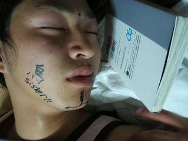
だからこんなことされても文句は言えない。
今日の一言：一番最後まで起きてたのは俺。
昨日夜３時過ぎまで起きてたもんで<起きたのはお昼、タケユキです。
朝起きて落書き顔の
三丁目が、
「おまえらひでえって！」
みたいなこと言いながら顔洗いに行ってた。
お昼ごはんはたこ焼き。
このためだけにさんまがわざわざ京都からたこ焼き器を持ってきてた。
たこを入れてなかったから性格にはたこ焼きじゃなくてただの
焼きなんだけど。
たこなくてもおいしくてよかったんだけど
途中からなぜか違う方向へずれ始める。
最初に仕掛けたのは
綾乃さん、
たこ焼き器のくぼみに半分近く生しょうがをぶち込む。
なんだその量は、もう少し遠慮をしろ。
焼きの半分くらいが生しょうがの焼きが完成してた。
俺はその一部始終を見ててそれを避けながら食べてたから大丈夫だったんだけど
その存在を忘れてたうのきが被爆、「お茶くれ！お茶！」を連呼。
それから先も焼きを焼くごとに定期的に爆弾が誰ともなく作られ、
結局みんなが被爆。
最後の方にはたこ焼き器の上には明らかに普通と違う光景が。
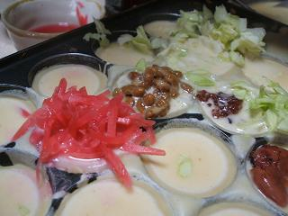
左から順に紅しょうが、納豆、
ジャム。
右下のは梅干し（丸々１個）。
明らかに紅しょうがの量が異常、多すぎ。
どこから見てもあふれてるじゃん。
それなのに無理やり作るからできた焼き、真っ赤だったし。
この二日目、昼過ぎに起きて焼き食ってたから
この日は結局大阪観光へは行かず。
うちでライオンキングを見たくらい。
綾乃さんは買い物行きたいからって
夕方からバイトのうのきと午後に早めにうちを出発したんだけど
他の男どもは夕方に新大阪駅へ送るまでうちでごろごろ。
結局
三丁目の大阪観光は一日で幕を閉じたとさ。
綾乃さんは買い物ついでにルミナリエ見に行ったら、
そこで
三丁目のおばちゃんに会ったらしい。
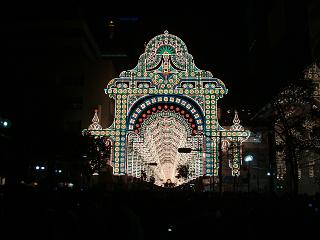
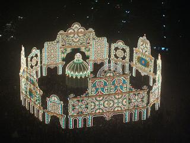
意外に世間は狭いもの。
長期の休みのときは気軽に遊びに来てください。
ご飯くらいは用意するんで、
おっさん以外は。
今日の一言：俺はかなり根に持つ男。